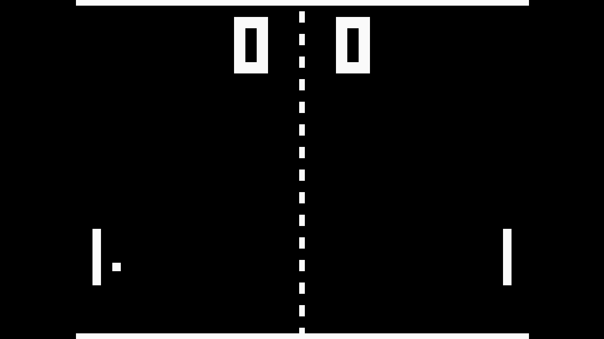
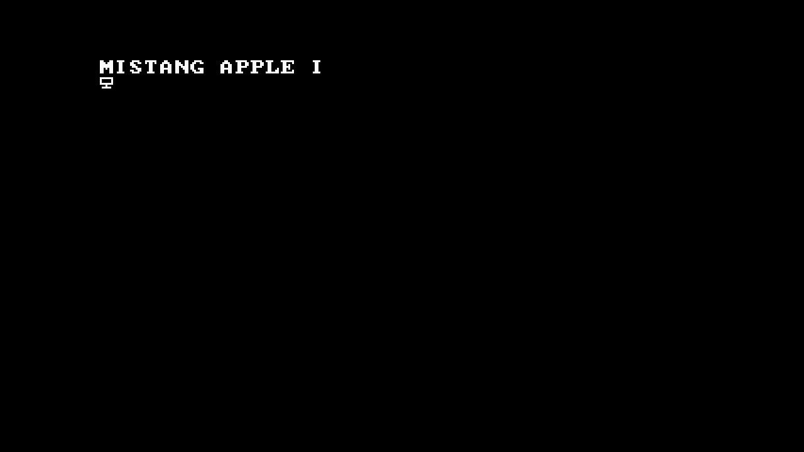
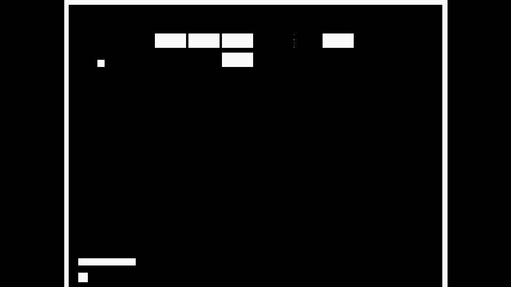

A launcher for the Sipeed Tang Nano 20K. Pick a core from an SD card, play, return to the menu. Flash and capture from your browser, with no vendor tools.
$ node tools/hw/idcode.mjs # same code the browser runs
JTAG IDCODE 0x0000081B GW2A(R)-18(C)
SPI flash Winbond W25Q64 EF 40 17 (8 MiB)
SRAM load 907 418 bytes in 4.8 s status 0x6020 DONE
RECONFIG_N fabric pulls pin 9 low → FPGA reloads at header address
USERCODE 0x4EAC → 0xFD4BMeasured on a real Tang Nano 20K, 2026-11-01.
Inside
The launcher menu below is drawn from the firmware’s layout. The frames are real captures from the board.
Loads in
4.8s
A 907 KB bitstream into the FPGA from your browser. Measured on the board.



574 systems mapped. Six cores of our own.
Sorted by whether they fit into 20 736 LUT4, not by hype.
Cores from SD
The FPGA cannot read an SD card into its own configuration, so the launcher stages the chosen core in a flash slot and asks the FPGA to reload from it.
The menu CPU reads /MiSTang/cores/<id>.bin from the card.
It writes the bitstream and the core’s firmware into slot A of the SPI flash.
The fabric pulls RECONFIG_N low. The FPGA boots the multiboot address from the bitstream header.
Holding S1 + S2 pulls the pin again. Slot A points back to the launcher.
Web Studio
WebUSB speaks MPSSE to the board’s FT2232, then Gowin JTAG: load into SRAM, write the SPI flash, verify. Chrome or Edge, no drivers on macOS and Linux.
Drop a Gowin .fs or .bin. Run it from SRAM in five seconds or write it to a flash slot with verification.
Any UVC capture card on the HDMI output: live view, pixel-perfect scaling, PNG screenshots, WebM recording with audio.
Prepare the folder layout and convert bitstreams so every core can find its way back.
Cores
Cores are written here or come from the Open Pocket projects. The catalog lists 574 systems from the MiSTer core lists and our own project list, and marks what fits into 20 736 LUT4.
Game Boy / Color and WonderSwan / Color from Open Pocket, plus CHIP-8, Pong and Apple I written from scratch. Status of each.
Console, computer, arcade and other. Sorted by whether they fit, not by hype.
Plus 828 Kbit of block RAM and 8 MB of SDRAM. PSX, N64 and Saturn will not fit.